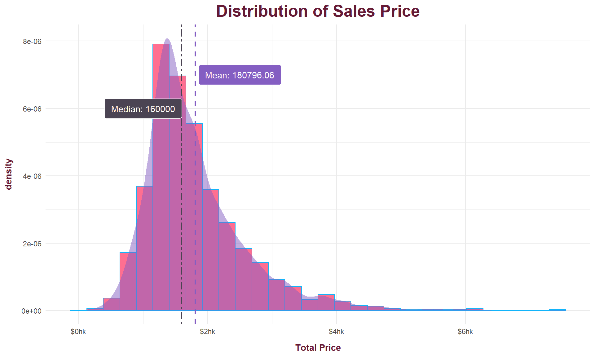
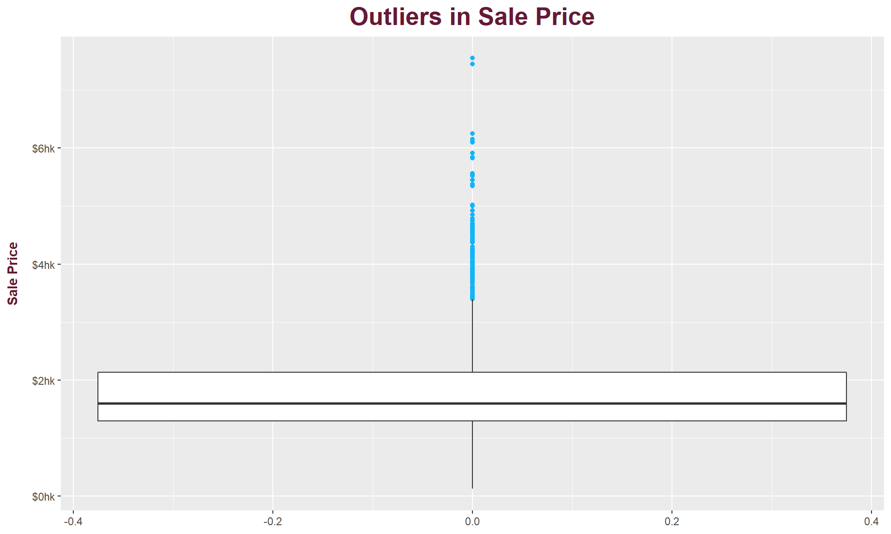
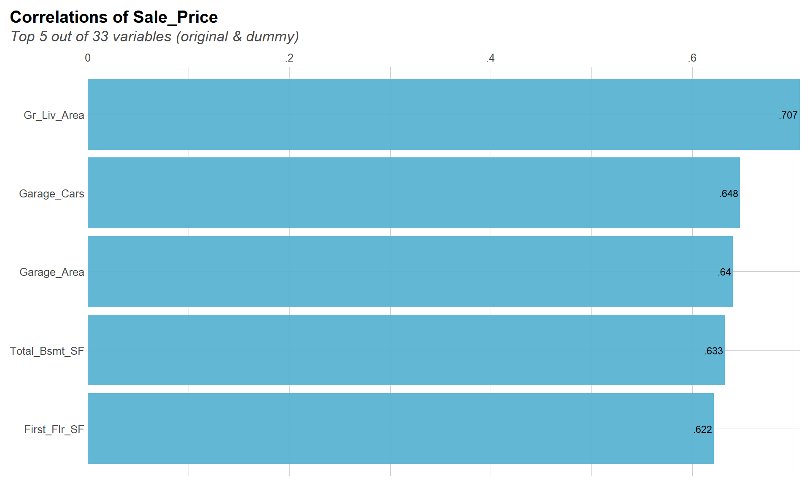
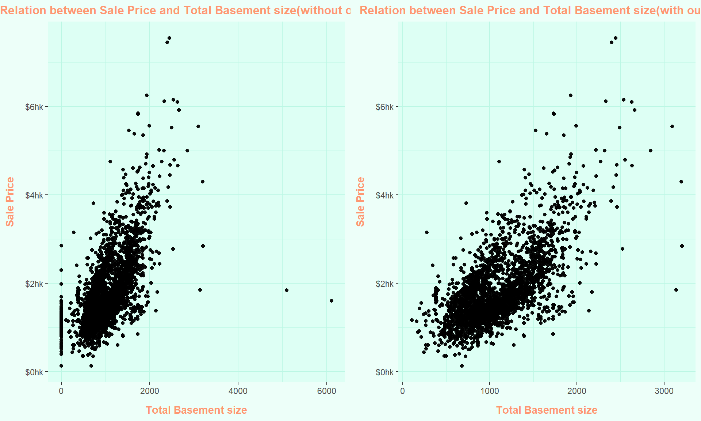
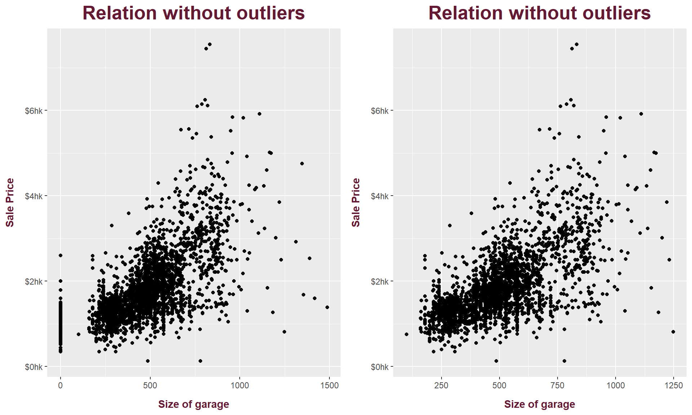
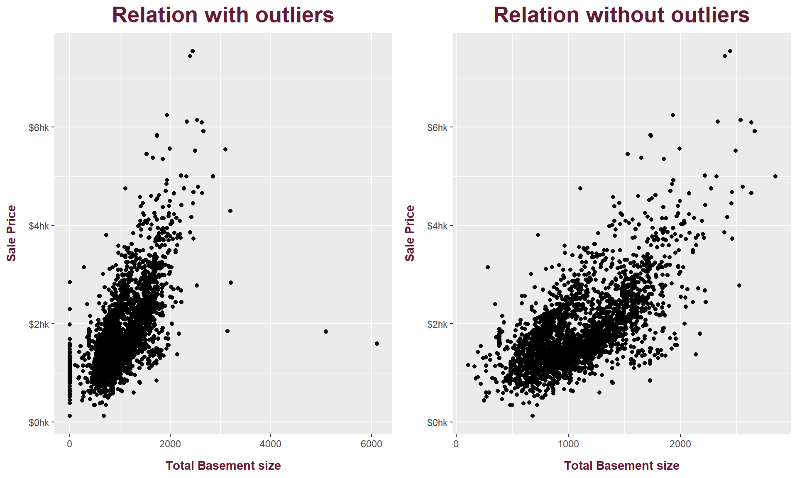
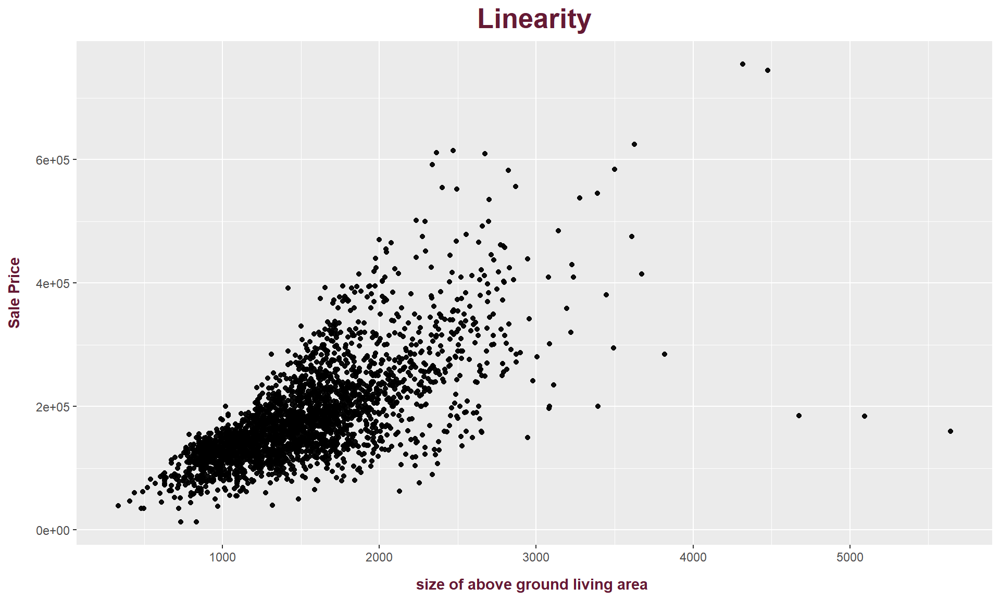
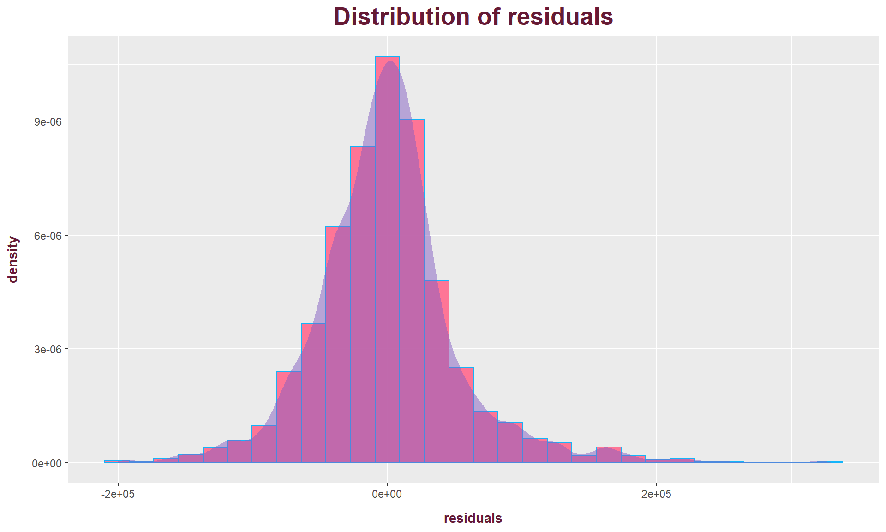
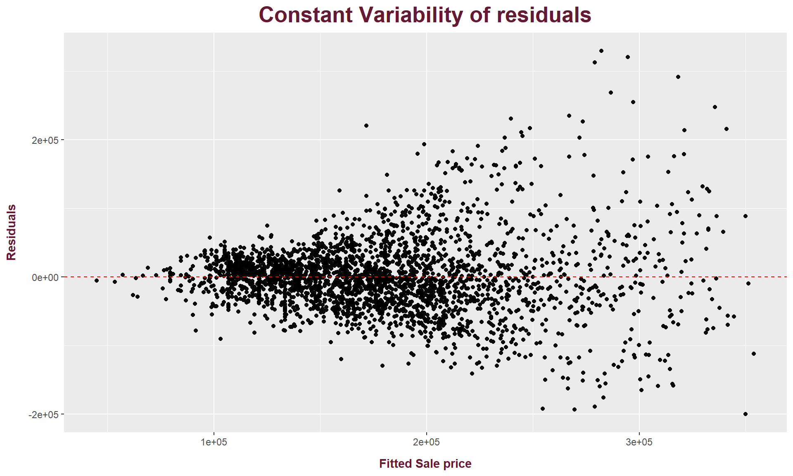

This blog post includes EDA, Modeling and how to improve model performance and how Model Assessment and Diagnostics is done. Here, I am not predicting any price, in this blog you just get to know how to do analysis of price of the house with the help of single linear model.

median < mean so we can say that our variable is right skewed. But it is not much skewed so we can consider it as normally distributed because in real world we never get perfectly distributed data.

We can see top 3 numerical feature that are directly correlated to the response variable.
Now, We look at each feature one by one and see if we can improve the relation?

Here, we can say that we have some positive relation between sale price and Above Ground Living Area.
The Correlation coefficient before removing outliers is 0.7067799
The Correlation coefficient after removing outliers is 0.7084774

Here, we can say that we have some positive relation between sale price and Size of garage.
The Correlation coefficient before removing outliers is 0.6401383
The Correlation coefficient after removing outliers is 0.6422716

Here, we can say that we have some positive relation between sale price and total basement size.
The Correlation coefficient before removing outliers is 0.6325288
The Correlation coefficient after removing outliers is 0.6632371
# A tibble: 2 x 5
term estimate std.error statistic p.value
<chr> <dbl> <dbl> <dbl> <dbl>
1 (Intercept) 5906. 3352. 1.76 0.0782
2 Gr_Liv_Area 117. 2.16 54.1 0 \(\hat{y}= 5905.812 + 116.874 \times Above-ground-living-area-size\)
Y intercept value means that, For a house with 0 Above ground living area size, the house price will be 5905.812 USD.
Slope of the fitted line means that, If we increase Above ground living area size by 1 Sqft, the price of the house increases with 116.874 USD.
# A tibble: 2 x 5
term estimate std.error statistic p.value
<chr> <dbl> <dbl> <dbl> <dbl>
1 (Intercept) 46925. 3341. 14.0 2.40e- 43
2 Garage_Area 277. 6.30 44.1 1.35e-321\(\hat{y}= 46925.28 + 277.37 \times Size-of-garage\)
Y intercept value means that, For a house with 0 Size of garage, the house price will be 46925.28 USD.
Slope of the fitted line means that, If we increase Size of garage size by 1 Sqft, the price of the house increases with 277.37 USD.
# A tibble: 2 x 5
term estimate std.error statistic p.value
<chr> <dbl> <dbl> <dbl> <dbl>
1 (Intercept) 35394. 3309. 10.7 3.36e-26
2 Total_Bsmt_SF 137. 2.90 47.2 0 \(\hat{y}= 35393.94 + 137 \times Total-Basement-Size\)
Y intercept value means that, For a house with 0 total basement size , the house price will be 35393.94 USD.
Slope of the fitted line means that, If we increase size of total basement by 1 Sqft, the price of the house with 137 USD.
| Above ground living area size | Size of garage | Total Basement size | |
|---|---|---|---|
| (Intercept) | 5905.812 | 46925.278 | 35393.941 |
| (3352.336) | (3340.582) | (3309.416) | |
| Gr_Liv_Area | 116.874 | ||
| (2.161) | |||
| Garage_Area | 277.371 | ||
| (6.296) | |||
| Total_Bsmt_SF | 136.994 | ||
| (2.900) | |||
| Num.Obs. | 2904 | 2766 | 2844 |
| R2 | 0.502 | 0.413 | 0.440 |
| R2 Adj. | 0.502 | 0.412 | 0.440 |
| AIC | 71512.6 | 68800.1 | 70599.3 |
| BIC | 71530.5 | 68817.9 | 70617.1 |
| Log.Lik. | -35753.310 | -34397.051 | -35296.640 |
| F | 2924.609 | 1940.784 | 2231.943 |
As we can see in the table,
Model 1 (Sale price, above ground living area) has 50% variability of sale price based on the above ground living area, which is the highest.
It has highest adjusted R squared value so we can say it is best.
The reason why we considered Adjusted R squared value to select best model is that,
Adjusted R - squared value only consider those independent variable which really helps in explaining the dependent variable.
Here, we are using many independent variable with the single dependent variable and we do not know which one is good one to explain the dependent variable so we can use the adjusted R-squared value.
Now that you have chosen our best model, we need to determine if it is reliable or not:
Linearity
Distribution of Residuals
Constant Variability of residuals
# A tibble: 2,904 x 8
Sale_Price Gr_Liv_Area .fitted .resid .hat .sigma .cooksd
<int> <int> <dbl> <dbl> <dbl> <dbl> <dbl>
1 215000 1656 199450. 15550. 0.000394 53815. 0.0000165
2 105000 896 110625. -5625. 0.000896 53816. 0.00000491
3 172000 1329 161232. 10768. 0.000382 53816. 0.00000765
4 244000 2110 252510. -8510. 0.000983 53816. 0.0000123
5 189900 1629 196294. -6394. 0.000380 53816. 0.00000268
6 195500 1604 193372. 2128. 0.000369 53816. 0.000000289
7 213500 1338 162284. 51216. 0.000377 53807. 0.000171
8 191500 1280 155505. 35995. 0.000409 53812. 0.0000917
9 236500 1616 194775. 41725. 0.000374 53810. 0.000112
10 189000 1804 216747. -27747. 0.000513 53813. 0.0000683
# ... with 2,894 more rows, and 1 more variable: .std.resid <dbl>

